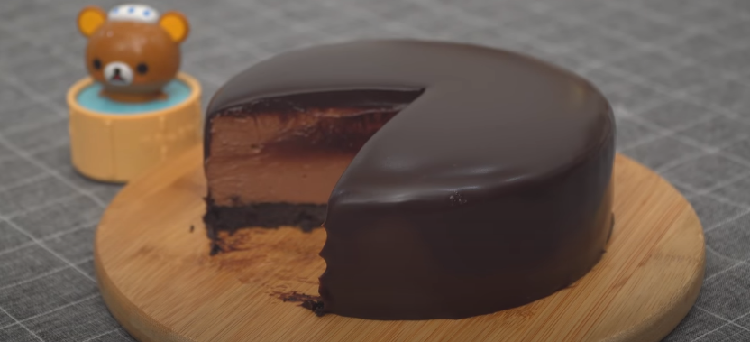

Chocolate Cheesecake

Description
A delicious chocolate cheesecake from the Youtube channel Nino's Home. No bake, no gelatin.
Ingredients
- 14 Oreo cookies
- 40g melted butter
- 300g dark chocolate
- Hot water
- 300g cheesecake
- 1tbsp vanilla extract
- 40g sugar
- 300g whipping cream
Steps
- Put the Oreo cookies in a plastic bag and crunch them
- Add the melted butter and mix well
- Put the mixture in a 15cm mold with a removable bottom and and press it hard
- Leave the mold in the refrigerator for 20 minutes
- Melt 200g of dark chocolate
- Put the creamcheese in a bowl and whisk it to make it softer
- Add the vanilla extract and sugar, then whisk it
- Add the melted chocolate to the mixture and whisk it again
- Whisk 200g of whipped cream until it's soft
- Add the whipping cream to the previous mixture and mix it lightly with the folding technique
- Put the mixture in the mold and refrigerate for 4 hours
- Put 100g os whipping cream in a pan and bring it to a soft boil
- Once it is boiling, put in a cup with 100g of dark chocolate and mix it to melt the chocolate
- Remove the cake from the mold and pour the whipping cream with chocolate on top of it